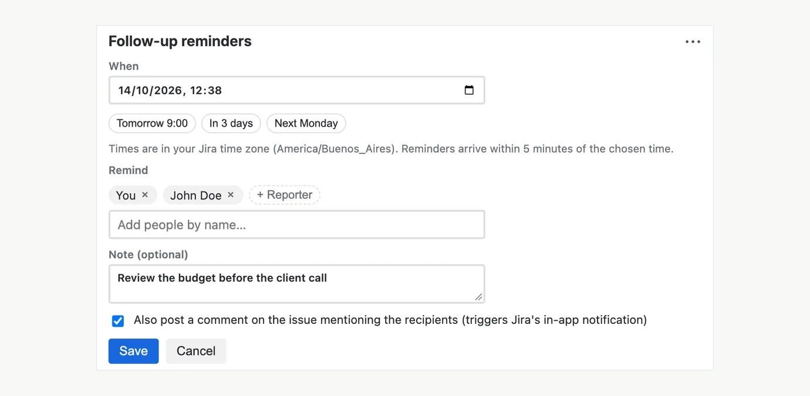
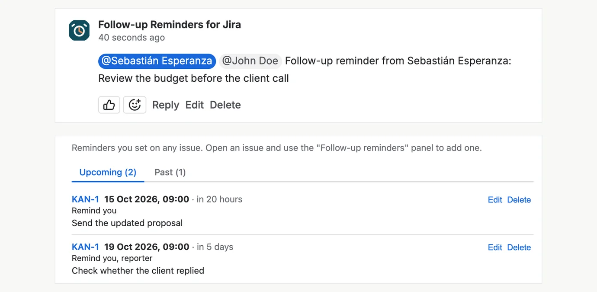

Guide · Jira Cloud
How to set a reminder on a Jira Cloud issue
“Remind me to check this on Monday” is one of the most common things people want from Jira, and Jira Cloud has no button for it. Here are the ways to get a reminder about an issue, what each one is good for, and the quickest way to remind yourself or a teammate at an exact time.
The options
| Option | Good for | Limits |
|---|---|---|
| Watch the issue | Hearing about changes | Tells you when something happens, not at a time you choose |
| Due date plus an automation rule | Team-wide rules, such as “email the assignee when the due date arrives” | Set up by an admin per project; one rule for everyone, not a personal note; counts toward your plan’s automation usage |
| A calendar or to-do app | Personal reminders | Lives outside Jira; teammates do not see it |
| A reminder on the issue | “Remind me, or Ana, about this issue on Monday at 9:00” | Needs an admin to install an app once |
Step by step with Follow-up Reminders for Jira
- A Jira administrator installs Follow-up Reminders for Jira from the Atlassian Marketplace. It is free for up to 10 users.
- Open the issue. The first time, click the + button under the issue title and choose Follow-up reminders under Apps.
- Click Set reminder. Pick a date and time, or a quick pick: Tomorrow 9:00, In 3 days, Next Monday, or Day before due date.
- Choose who to remind: you, the assignee, the reporter, or anyone you search by name. Add a short note, such as “Check whether the client replied”.
- Optionally tick Also post a comment, so recipients also get Jira’s in-app notification. Save.

What happens at the chosen time
- Jira emails each recipient with your note and a link to the issue, within five minutes of the time you picked.
- If you ticked the option, a comment on the issue mentions them, which shows up in Jira’s notification bell.
- Times are in each person’s own Jira time zone, so “9:00” means 9:00 for you.
- The My reminders page in the Apps menu lists everything you scheduled across all issues, upcoming and sent.

Good uses
- Waiting on someone else: “Remind me Thursday to chase the vendor.”
- Handing over: remind a teammate the day before a due date, with context in the note.
- Following up after a release: “Check the error rate on Monday morning.”
Questions
Does anything leave Atlassian?
No. Reminders are stored in Atlassian-hosted storage and the email is sent by Jira itself. The app qualifies for Runs on Atlassian and has no servers of its own.
Can a reminder repeat?
Not yet: reminders are one-off. For recurring, rule-based notifications, a Jira automation rule is the right tool.
Can I remind someone who cannot see the issue?
No. Jira only notifies people who can view the issue, so only they are offered as recipients.